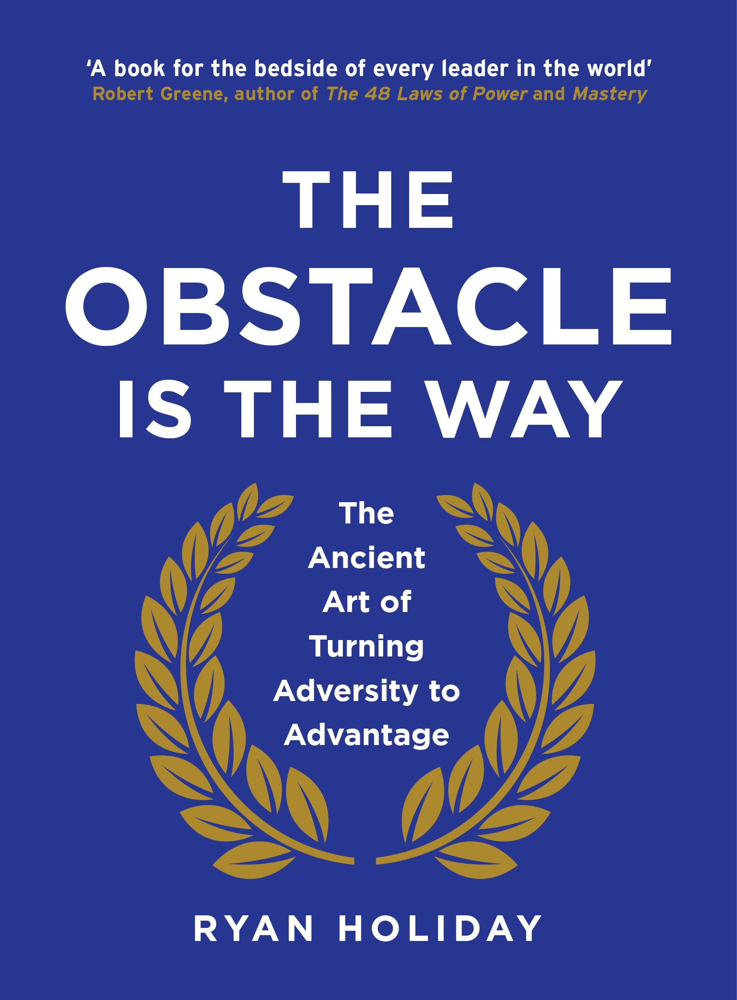

The Obstacle Is the Way: The Timeless Art of Turning Trials into Triumph
Hardcover 13.99 $
#1 Wall Street Journal Bestseller
The Obstacle is the Way has become a cult classic, beloved by men and women around the world who apply its wisdom to become more successful at whatever they do.
Its many fans include a former governor and movie star (Arnold Schwarzenegger), a hip hop icon (LL Cool J), an Irish tennis pro (James McGee), an NBC sportscaster (Michele Tafoya), and the coaches and players of winning teams like the New England Patriots, Seattle Seahawks, Chicago Cubs, and University of Texas men’s basketball team.
The book draws its inspiration from stoicism, the ancient Greek philosophy of enduring pain or adversity with perseverance and resilience. Stoics focus on the things they can control, let go of everything else, and turn every new obstacle into an opportunity to get better, stronger, tougher. As Marcus Aurelius put it nearly 2000 years ago: “The impediment to action advances action. What stands in the way becomes the way.”
Ryan Holiday shows us how some of the most successful people in history—from John D. Rockefeller to Amelia Earhart to Ulysses S. Grant to Steve Jobs—have applied stoicism to overcome difficult or even impossible situations. Their embrace of these principles ultimately mattered more than their natural intelligence, talents, or luck.
If you’re feeling frustrated, demoralized, or stuck in a rut, this book can help you turn your problems into your biggest advantages. And along the way it will inspire you with dozens of true stories of the greats from every age and era.